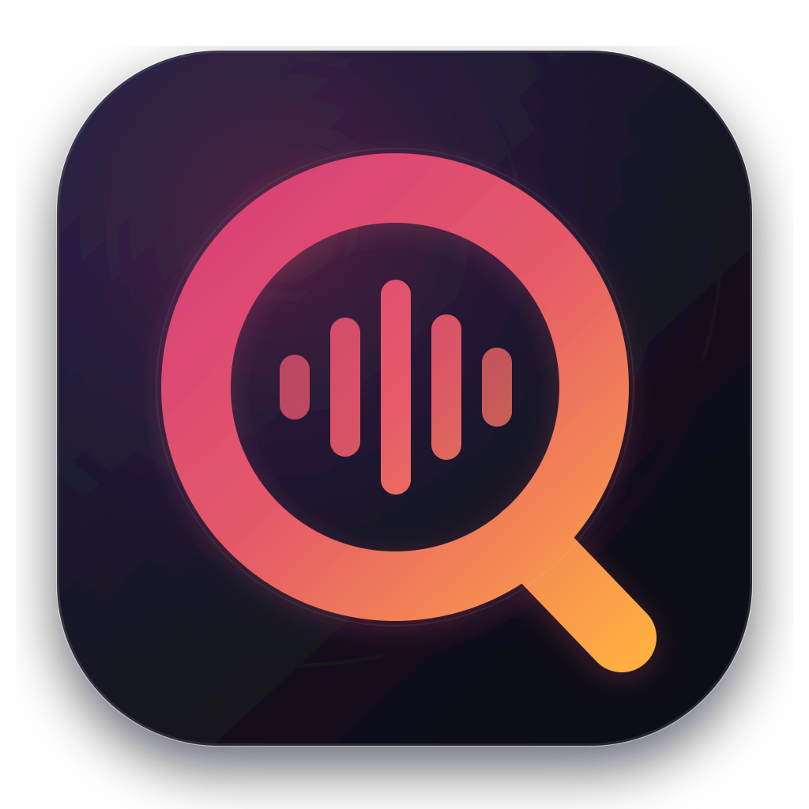

Open-source macOS speech tools
Qwen Scribe
Private, local transcription and system-wide dictation for Apple Silicon.
On-device
Qwen3-ASR
MLX + Metal

Private, local transcription and system-wide dictation for Apple Silicon.